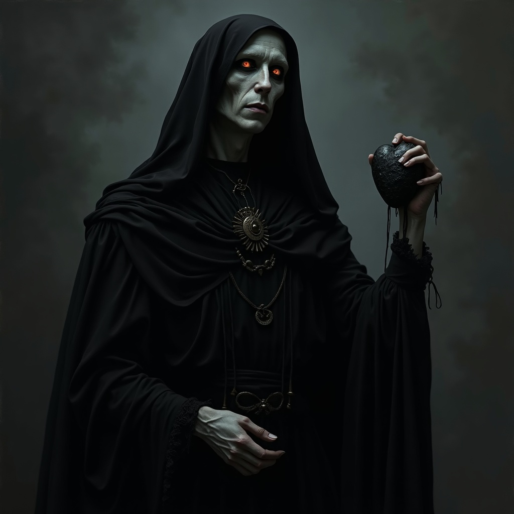

Koshchei, sometimes called The Withered Bridegroom or The Immortal Spite, is a demi-god who dwells in the
borderlands between life and death, feeding on bitterness, broken promises, and betrayed love. Unlike greater
gods, Koshchei does not rule over temples or nations; instead, he whispers to the wronged and dispossessed,
offering them the cold comfort of retribution.
To his worshippers—known as Brides and Grooms—Koshchei represents both justice and cruelty: a force that
balances the scales when mortal laws fail. He is neither wholly evil nor merciful, but an arbiter of pain,
weaving vengeance into the destiny of those who call upon him.
Koshchei is said to appear as a gaunt, pale man draped in black funeral garb, his eyes hollow yet burning
faintly with silver fire. In his hands, he always holds something bound—threads, chains, or a heart of glass. He
is both jailer and liberator, an immortal who cannot die because his soul is hidden beyond reach.